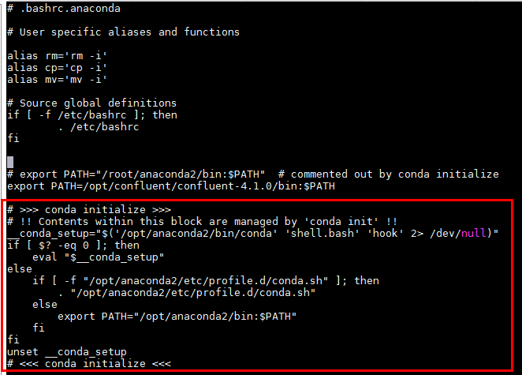
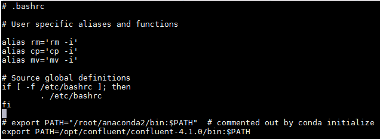
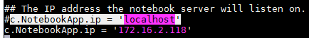

Connection Instruction between Jupyter Notebook and FusionInsight¶
Succeeded Case¶
Jupyter Notebook 5.7.8 ↔ FusionInsight HD V100R002C80SPC200 (Hive/ELK/Spark2x)
Jupyter Notebook 5.7.8 ↔ FusionInsight HD 6.5 (Hive/ELK/Spark2x)
Install Anaconda¶
Refer to Anaconda official documentation to install Anaconda corresponding to Linux：https://docs.anaconda.com/anaconda/install/linux/
-
Use the command
wget https://repo.anaconda.com/archive/Anaconda2-2019.03-Linux-x86_64.shto download the Linux-related installation package -
Use the command
bash Anaconda2-2019.03-Linux-x86_64.shto start the installation -
Press the Enter to view License Agreement
- Type yes
-
Choose the installation location to
/opt/anaconda2
-
After the installation is complete, select yes to initialize, and write the initialization settings to the
~/.bashrcfile.
-
Use the command
cp ~/.bashrc ~/.bashrc.anacondato copy the generated.basrcfile into a new named file.bashrc.anacondawith the following detail info:

The red box is the initial configuration added after installing anaconda
- Use the command
vi ~/.bashrcto modify the.bashrcfile, delete the conda initialization part：

-
Use the command
source ~/.bashrc.anacondato initialize the Environment -
Use the command
jupyter notebook --generate-config --allow-rootto generate the jupyter notebook configuration file

-
Use the following command
vi /root/.jupyter/jupyter_notebook_config.pyto modify the configuration parameters: -
Change the IP

- Change the port(optional)

save
-
Install the FI HD client on the jupyter notebook host.
-
Using the following command to start jupyter notebook
source /opt/hadoopclient/bigdata_env kinit developuser source ~/.bashrc.anaconda export PYSPARK_DRIVER_PYTHON="ipython" export PYSPARK_DRIVER_PYTHON_OPTS="notebook --allow-root" pyspark --master yarn --deploy-mode client &

Copy and paste the corresponding address directly to login to the jupyter notebook web UI：

Connect to Spark2x¶
Note: Use pySpark interface to connect Spark2x HD components
-
Use the previous section command to start jupyter notebook and enter weibUI
-
Go to the following link to obtain the required data file airlines.csv, and upload the data file to the
/tmppath of the hdfs: https://github.com/beanumber/airlines/blob/master/data-raw/airlines.csv -
Create a new notebook and enter python code
from pyspark import SparkConf
from pyspark import SparkContext
conf = SparkConf()
conf.setAppName('spark-wordcount_from172.16.2.118')
sc = SparkContext(conf=conf)
distFile = sc.textFile('hdfs://hacluster/tmp/airlines.csv')
nonempty_lines = distFile.filter(lambda x: len(x) > 0)
print 'Nonempty lines', nonempty_lines.count()
words = nonempty_lines.flatMap(lambda x: x.split(' '))
wordcounts = words.map(lambda x: (x, 1)) \
.reduceByKey(lambda x, y: x+y) \
.map(lambda x: (x[1], x[0])).sortByKey(False)
print 'Top 100 words:'
print wordcounts.take(100)

Check the tasks on yarn:

Connect to Hive¶
Note: Configure the jdbc interface to connect to the cluster Hive
-
Stop the running jupyter notebook
-
Find the
anaconda installation directory/bin/pipexecutable file, you need to install two python packages related to jdbc, use the following command to install:
./pip install JPype1==0.6.3 --force-reinstall
./pip install JayDeBeApi==0.2 --force-reinstall

Note: The version of JayDeBeApi and Jpepe1 must be consistent with the above, otherwise a version mismatching error will be reported. Those who have installed these two packages can check the version by using the following command:
./pip freeze | grep JPype1
./pip freeze | grep JayDeBeApi
-
Put the cluster authentication file
user.keytabto the jupyter notebook host's/optdirectory for Hive authentication, and put the authentication-related krb5.conf file to the/etc/path -
Create a jaas.conf configuration file in the jupyter notebook host
/optdirectory, the content is as follows:
Client {
com.sun.security.auth.module.Krb5LoginModule required
useKeyTab=true
principal="developuser@HADOOP.COM"
keyTab="/opt/user.keytab"
useTicketCache=false
storeKey=true
debug=true;
};
- Use the following command to load the JVM parameters：
source /opt/hadoopclient/bigdata_env kinit developuser export JAVA_TOOL_OPTIONS="-Djava.security.krb5.conf=/etc/krb5.conf -Djava.security.auth.login.config=/opt/jaas.conf -Dzookeeper.server.principal=zookeeper/hadoop.hadoop.com -Dzookeeper.request.timeout=120000"
Use the command java -version to see if the loading is successful：

- Start jupyter notebook with the following command
source ~/.bashrc.anaconda export PYSPARK_DRIVER_PYTHON="ipython" export PYSPARK_DRIVER_PYTHON_OPTS="notebook --allow-root" pyspark --master yarn --deploy-mode client &
Note: If you don't need to interact with Spark2x components, you can directly use the command jupyter notebook --allow-root to directly start jupyter notebook
- Create a new notebook and enter the following code:
import jaydebeapi
import jpype
import os
# this worked
conn = jaydebeapi.connect(
"org.apache.hive.jdbc.HiveDriver",
["jdbc:hive2://172.16.4.121:24002,172.16.4.122:24002,172.16.4.123:24002/default;serviceDiscoveryMode=zooKeeper;principal=hive/hadoop.hadoop.com@HADOOP.COM;user.principal=developuser;user.keytab=/opt/user.keytab" , "developuser", "Huawei@123"], [ '/opt/125_651hdclient/hadoopclient/Hive/Beeline/lib/jdbc/ant-1.10.3.jar','/opt/125_651hdclient/hadoopclient/Hive/Beeline/lib/jdbc/cglib-3.2.10.jar','/opt/125_651hdclient/hadoopclient/Hive/Beeline/lib/jdbc/common-0.0.1.jar','/opt/125_651hdclient/hadoopclient/Hive/Beeline/lib/jdbc/commons-collections-3.2.2.jar','/opt/125_651hdclient/hadoopclient/Hive/Beeline/lib/jdbc/commons-collections4-4.2.jar','/opt/125_651hdclient/hadoopclient/Hive/Beeline/lib/jdbc/commons-configuration-1.6.jar','/opt/125_651hdclient/hadoopclient/Hive/Beeline/lib/jdbc/commons-configuration2-2.1.1.jar','/opt/125_651hdclient/hadoopclient/Hive/Beeline/lib/jdbc/commons-io-2.4.jar','/opt/125_651hdclient/hadoopclient/Hive/Beeline/lib/jdbc/commons-lang-2.6.jar','/opt/125_651hdclient/hadoopclient/Hive/Beeline/lib/jdbc/commons-lang3-3.3.2.jar','/opt/125_651hdclient/hadoopclient/Hive/Beeline/lib/jdbc/commons-logging-1.1.3.jar','/opt/125_651hdclient/hadoopclient/Hive/Beeline/lib/jdbc/commons-net-3.6.jar','/opt/125_651hdclient/hadoopclient/Hive/Beeline/lib/jdbc/crypter-0.0.6.jar','/opt/125_651hdclient/hadoopclient/Hive/Beeline/lib/jdbc/curator-client-2.12.0.jar','/opt/125_651hdclient/hadoopclient/Hive/Beeline/lib/jdbc/curator-framework-2.12.0.jar','/opt/125_651hdclient/hadoopclient/Hive/Beeline/lib/jdbc/cxf-core-3.1.16.jar','/opt/125_651hdclient/hadoopclient/Hive/Beeline/lib/jdbc/cxf-rt-frontend-jaxrs-3.1.16.jar','/opt/125_651hdclient/hadoopclient/Hive/Beeline/lib/jdbc/cxf-rt-transports-http-3.1.16.jar','/opt/125_651hdclient/hadoopclient/Hive/Beeline/lib/jdbc/FMS-v1r2c60-20160429.jar','/opt/125_651hdclient/hadoopclient/Hive/Beeline/lib/jdbc/guava-19.0.jar','/opt/125_651hdclient/hadoopclient/Hive/Beeline/lib/jdbc/hadoop-auth-3.1.1.jar','/opt/125_651hdclient/hadoopclient/Hive/Beeline/lib/jdbc/hadoop-common-3.1.1.jar','/opt/125_651hdclient/hadoopclient/Hive/Beeline/lib/jdbc/hadoop-mapreduce-client-core-3.1.1.jar','/opt/125_651hdclient/hadoopclient/Hive/Beeline/lib/jdbc/HA-v1r2c60-20160429.jar','/opt/125_651hdclient/hadoopclient/Hive/Beeline/lib/jdbc/hive-common-3.1.0.jar','/opt/125_651hdclient/hadoopclient/Hive/Beeline/lib/jdbc/hive-jdbc-3.1.0.jar','/opt/125_651hdclient/hadoopclient/Hive/Beeline/lib/jdbc/hive-metastore-3.1.0.jar','/opt/125_651hdclient/hadoopclient/Hive/Beeline/lib/jdbc/hive-serde-3.1.0.jar','/opt/125_651hdclient/hadoopclient/Hive/Beeline/lib/jdbc/hive-service-3.1.0.jar','/opt/125_651hdclient/hadoopclient/Hive/Beeline/lib/jdbc/hive-service-rpc-3.1.0.jar','/opt/125_651hdclient/hadoopclient/Hive/Beeline/lib/jdbc/hive-shims-0.23-3.1.0.jar','/opt/125_651hdclient/hadoopclient/Hive/Beeline/lib/jdbc/hive-shims-common-3.1.0.jar','/opt/125_651hdclient/hadoopclient/Hive/Beeline/lib/jdbc/hive-standalone-metastore-3.1.0.jar','/opt/125_651hdclient/hadoopclient/Hive/Beeline/lib/jdbc/httpclient-4.5.2.jar','/opt/125_651hdclient/hadoopclient/Hive/Beeline/lib/jdbc/httpcore-4.4.4.jar','/opt/125_651hdclient/hadoopclient/Hive/Beeline/lib/jdbc/jackson-annotations-2.9.8.jar','/opt/125_651hdclient/hadoopclient/Hive/Beeline/lib/jdbc/jackson-core-2.9.8.jar','/opt/125_651hdclient/hadoopclient/Hive/Beeline/lib/jdbc/jackson-core-asl-1.9.13.jar','/opt/125_651hdclient/hadoopclient/Hive/Beeline/lib/jdbc/jackson-databind-2.9.8.jar','/opt/125_651hdclient/hadoopclient/Hive/Beeline/lib/jdbc/jackson-jaxrs-1.9.13.jar','/opt/125_651hdclient/hadoopclient/Hive/Beeline/lib/jdbc/jackson-mapper-asl-1.9.13.jar','/opt/125_651hdclient/hadoopclient/Hive/Beeline/lib/jdbc/javax.annotation-api-1.2.jar','/opt/125_651hdclient/hadoopclient/Hive/Beeline/lib/jdbc/javax.ws.rs-api-2.0.1.jar','/opt/125_651hdclient/hadoopclient/Hive/Beeline/lib/jdbc/jdbc_pom.xml','/opt/125_651hdclient/hadoopclient/Hive/Beeline/lib/jdbc/jettison-1.1.jar','/opt/125_651hdclient/hadoopclient/Hive/Beeline/lib/jdbc/jsch-0.1.54.jar','/opt/125_651hdclient/hadoopclient/Hive/Beeline/lib/jdbc/libthrift-0.9.3.jar','/opt/125_651hdclient/hadoopclient/Hive/Beeline/lib/jdbc/log4j-1.2.17.jar','/opt/125_651hdclient/hadoopclient/Hive/Beeline/lib/jdbc/mockito-all-1.10.19.jar','/opt/125_651hdclient/hadoopclient/Hive/Beeline/lib/jdbc/netty-all-4.1.17.Final.jar','/opt/125_651hdclient/hadoopclient/Hive/Beeline/lib/jdbc/om-controller-api-0.0.1.jar','/opt/125_651hdclient/hadoopclient/Hive/Beeline/lib/jdbc/om-monitor-plugin-0.0.1.jar','/opt/125_651hdclient/hadoopclient/Hive/Beeline/lib/jdbc/pms-v1r2c60-20160429.jar','/opt/125_651hdclient/hadoopclient/Hive/Beeline/lib/jdbc/protobuf-java-2.5.0.jar','/opt/125_651hdclient/hadoopclient/Hive/Beeline/lib/jdbc/slf4j-api-1.7.10.jar','/opt/125_651hdclient/hadoopclient/Hive/Beeline/lib/jdbc/slf4j-log4j12-1.7.5.jar','/opt/125_651hdclient/hadoopclient/Hive/Beeline/lib/jdbc/spring-aop-4.3.20.RELEASE.jar','/opt/125_651hdclient/hadoopclient/Hive/Beeline/lib/jdbc/spring-beans-4.3.20.RELEASE.jar','/opt/125_651hdclient/hadoopclient/Hive/Beeline/lib/jdbc/spring-context-4.3.20.RELEASE.jar','/opt/125_651hdclient/hadoopclient/Hive/Beeline/lib/jdbc/spring-core-4.3.20.RELEASE.jar','/opt/125_651hdclient/hadoopclient/Hive/Beeline/lib/jdbc/spring-expression-4.3.20.RELEASE.jar','/opt/125_651hdclient/hadoopclient/Hive/Beeline/lib/jdbc/stax2-api-3.1.4.jar','/opt/125_651hdclient/hadoopclient/Hive/Beeline/lib/jdbc/stax-api-1.0-2.jar','/opt/125_651hdclient/hadoopclient/Hive/Beeline/lib/jdbc/woodstox-core-5.0.3.jar','/opt/125_651hdclient/hadoopclient/Hive/Beeline/lib/jdbc/woodstox-core-asl-4.4.1.jar','/opt/125_651hdclient/hadoopclient/Hive/Beeline/lib/jdbc/xercesImpl-2.9.1.jar','/opt/125_651hdclient/hadoopclient/Hive/Beeline/lib/jdbc/xmlpull-1.1.3.1.jar','/opt/125_651hdclient/hadoopclient/Hive/Beeline/lib/jdbc/xmlschema-core-2.2.3.jar','/opt/125_651hdclient/hadoopclient/Hive/Beeline/lib/jdbc/xpp3_min-1.1.4c.jar','/opt/125_651hdclient/hadoopclient/Hive/Beeline/lib/jdbc/xstream-1.4.10.jar','/opt/125_651hdclient/hadoopclient/Hive/Beeline/lib/jdbc/zookeeper-3.5.1.jar'])
import pandas as pd
sql = "Select * From drill_iris"
df_hive = pd.read_sql(sql, conn)
df_hive
conn.close()
Note: jaydebeapi.connect () is the jdbc connection method. Jaydebeapi.connect ("Driver Main Class", ["Connecting URL", "User", "Password"], "Path to JDBC driver"), to connect hive, you need to connect the client All jar packages in the hive jdbc sample are imported

Connect to ELK¶
Note：Configure jdbc interface to connect to the cluster ELK
- ELK related configuration
-
Create a database user joe with a password of
Bigdata@123and give user joe all permissions -
Create HDFS tablespace
-
Create database db_tpcds
-
Create a table named “hdfs_001” and insert some test data

-
Refer to the ELK product document to configure the ELK whitelist open for jupyter notebook host
-
Stop the running jupyter notebook
-
Find the
anaconda installation directory/bin/pipexecutable file, you need to install two python packages related to jdbc, use the following command to install:
./pip install JPype1==0.6.3 --force-reinstall
./pip install JayDeBeApi==0.2 --force-reinstall
Note: The version of JayDeBeApi and Jpepe1 must be consistent with the above, otherwise a version mismatching error will be reported. Those who have installed these two packages can check the version by using the following command:
./pip freeze | grep JPype1
./pip freeze | grep JayDeBeApi
- Start jupyter notebook with the following command
source ~/.bashrc.anaconda export PYSPARK_DRIVER_PYTHON="ipython" export PYSPARK_DRIVER_PYTHON_OPTS="notebook --allow-root" pyspark --master yarn --deploy-mode client &
Note: If you don't need to interact with Spark2x components, you can directly use the command jupyter notebook --allow-root to directly start jupyter notebook
-
Put ELK JDBC driver jar package
gsjdbc4.jarin the jupyter notebook host/optdirectory -
Create a new notebook and enter the following code:
import jaydebeapi
import jpype
# this worked
conn2 = jaydebeapi.connect(
'org.postgresql.Driver',
["jdbc:postgresql://172.16.4.121:25108/db_tpcds" , "joe", "Bigdata@123"], "/opt/gsjdbc4.jar"
)
import pandas as pd
sql = "Select * From hdfs_001"
df = pd.read_sql(sql, conn2)
df
conn2.close()

F&Q¶
- Encountered the following problems when using pySpark:

ValueError: Cannot run multiple SparkContexts at once; existing SparkContext(app=PySparkShell, master=yarn) created by <module> at /opt/anaconda2/lib/python2.7/site-packages/IPython/utils/py3compat.py:289
sc.stop()
- Encountered the error when connecting to ELK:

solution：Configure ELK whitelist